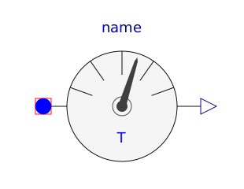
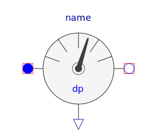

Anton Haumer
Technical Consulting & Electrical Engineering
A-3423 St.Andrae-Woerdern, Austria
email: a.haumer@haumer.at
Dr. Christian Kral
Austrian Institute of Technology,
AIT
Giefinggasse 2
A-1210 Vienna, Austria
Copyright © 1998-2013, Modelica Association, Anton Haumer and Austrian Institute of Technology, AIT.
This Modelica package is free software and the use is completely at your own risk; it can be redistributed and/or modified under the terms of the Modelica License 2. For license conditions (including the disclaimer of warranty) see Modelica.UsersGuide.ModelicaLicense2 or visit https://www.modelica.org/licenses/ModelicaLicense2.
| Name | Description |
|---|---|
| Absolute pressure sensor | |
|  TemperatureSensor | Absolute temperature sensor |
|  RelPressureSensor | Pressure difference sensor |
| Temperature difference sensor | |
| Mass flow sensor | |
| Volume flow sensor | |
| Enthalpy flow sensor |